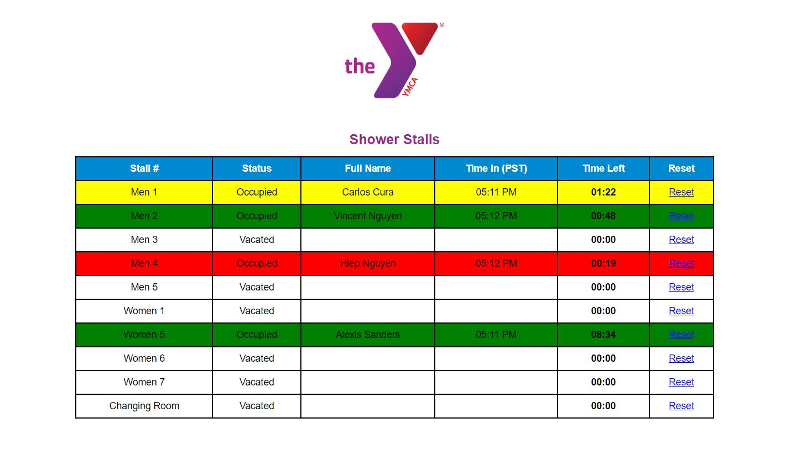
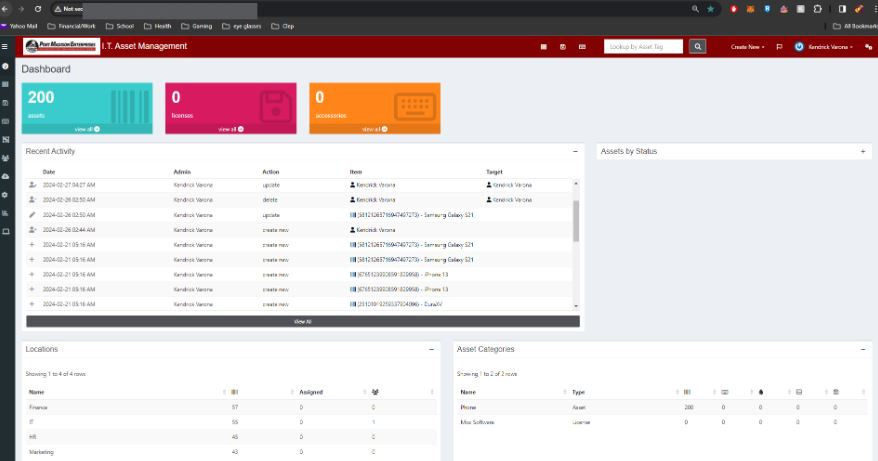

My Projects
Over the past year, I have had the privilege of working on
two transformative projects that have honed my skills in both
front-end and back-end development. As a Software Engineer at
the YMCA, I developed a Stall Management System that modernized
facility operations by introducing real-time data tracking and
secure online processes. Following that, I engineered an Asset
Management System for Port Madison Enterprise, where I streamlined
device management and optimized user interface design.
These experiences have strengthened my expertise in web technologies
and user-centric design, positioning me to deliver impactful,
efficient solutions.
 September 2023
September 2023
Stall Management System

As a Software Engineer at the YMCA from September to December 2023, I played a key role in developing a Stall Management
System that transformed the organization's operations. Collaborating with cross-functional teams, I designed and
implemented both front-end and back-end components using HTML, CSS, PHP, and JSON. This system enabled dynamic,
real-time tracking of stall availability and occupancy, significantly improving efficiency. Additionally, I ensured
the secure storage of personal information and facility management data, replacing the YMCA's outdated manual,
paper-based processes with a modern, streamlined online platform. This transition resulted in a more efficient
and reliable system for managing their facilities.
January 2024
Asset Management System

As a Design Engineer for Port Madison Enterprise from January to March 2024, I engineered a robust asset management
system using the web-based platform Snipe-IT, effectively managing over 200 company devices. I redesigned the platform's
user interface by incorporating feedback from supervisors and test users, optimizing the layout and color schemes to meet
company usability requirements. Additionally, I streamlined system functionality by removing redundant features and transitioning
data from Excel spreadsheets to a new comprehensive platform. This overhaul boosted real-time data performance, increasing
production accuracy and retention by 4%,
while also improving employee task completion speed and overall system efficiency.